Campus Life
Life on East Hill
What happens on East Hill
Where Hornell students live, eat, go out and argue: a guide to the hill and the railroad city below it.
The guide they don't hand out at orientation. A Hornell weekend starts on Thursday.
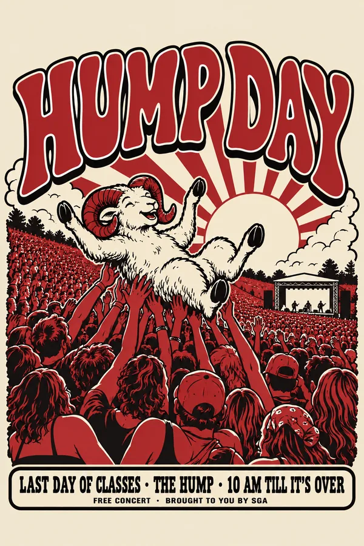
Housing
Where you'll live
Where you'll end up
Freshmen live in the towers, sophomores spread across campus, and most juniors and seniors move off the hill.
The housing lottery is in February. It ends friendships every year.
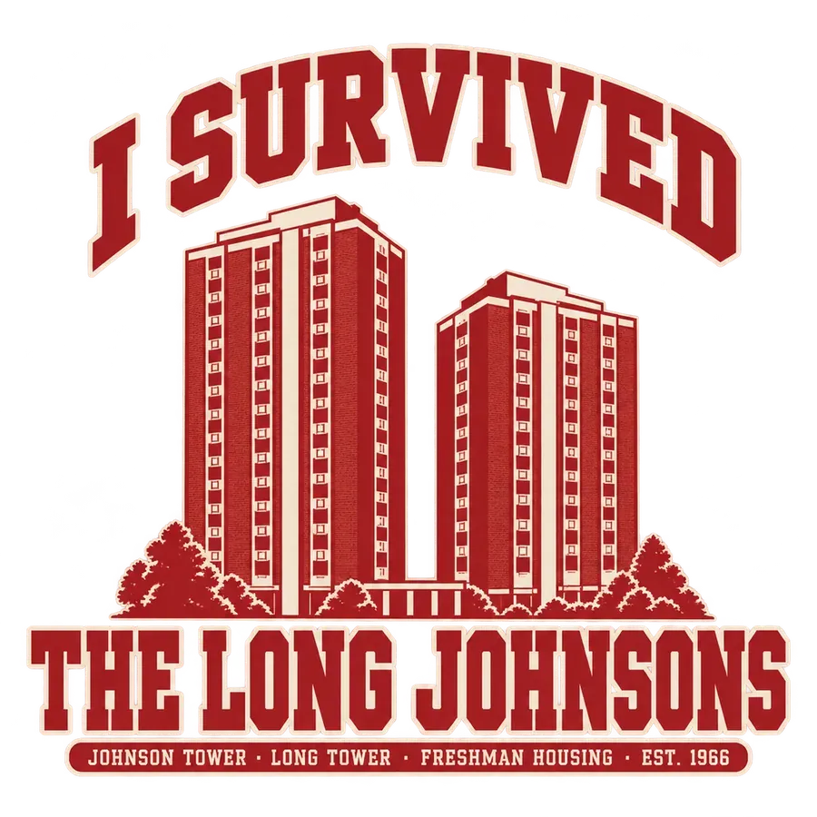
Johnson Tower & Long Tower
Freshmen · 1,600 in doubles
Two fourteen-story residence halls on the east edge of campus, built in 1966 and named for donors Harold Johnson and Edith Long. All first-year students live here and join the unlimited meal plan at Rowe.
Everyone has called them the Long Johnsons since the first week in 1966. Hot water runs out at 8:40 a.m., one elevator is always broken, and the fire alarm goes off at 3 a.m. about once a month (popcorn, once a KEG pledge with a smoke machine).
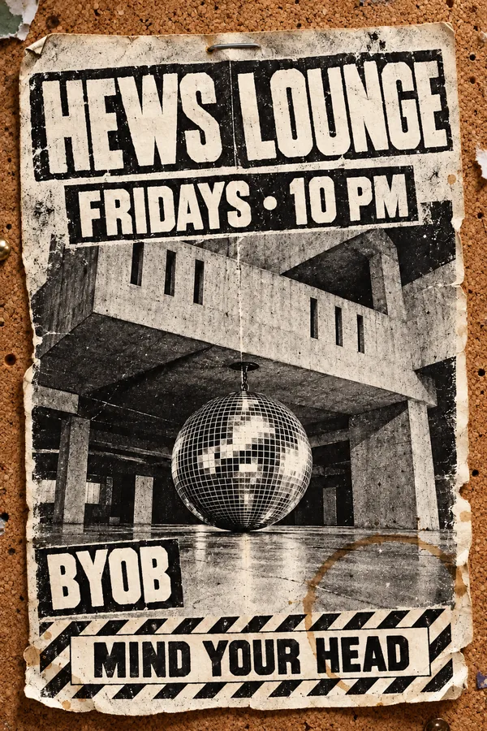
Hews Hall
Sophomores and transfers · suites of four
A 1968 residence hall in the brutalist style, offering the most affordable on-campus housing and an active residential community.
The Bunker. Low ceilings, slit windows, heat that's always too high, the laxest RAs on campus and Friday parties in Hews Lounge. Legend says housing sends every girl over six feet here. The scariest girl on campus lives on 3, with a cat that isn't allowed.
Asher House
Honors College · 220 singles
An 1890 ivy-covered residence on the Quad, home of the Honors College, with a monthly High Table dinner with faculty.
Marble fireplaces sealed shut for decades. Arguments are carried on in anonymous notes pinned to the common-room corkboard, in Latin when it gets serious.
The Ridge
Upper-division apartments · opened 2021
Four-bedroom suites with private bathrooms, full kitchens, a 24-hour fitness room and a rooftop terrace above Schuyler Field.
“Ridge kids” is campus shorthand for money. Key fobs run the elevators, so going upstairs means being let up. The volleyball team has the fifth floor.
Brewer Street
Off campus · $650–950 a room
Six blocks of historic homes between campus and downtown, a short walk to class and a popular choice for juniors and seniors.
Couches on porches, kegs in kitchens, red cups on every lawn by Saturday morning. Houses are handed down with their names: the Penalty Box, the Ruck Shack, the Green Room, the Server Farm. Nobody owns anything on Brewer Street. Sovereign does.
Roundhouse Lofts
Off campus · $2,400–4,000
Sixty lofts inside the restored 1880s Erie Railroad roundhouse, with a heated pool where the turntable once stood.
Trust funds, NIL money and one professor going through a divorce. The pool parties are the hardest door in town. Hector at the night desk has never repeated anything.
Food & late night
Eating well on East Hill
4 a.m. is a mealtime
Two dining halls on campus and a downtown full of independent restaurants.
Pregame, Gino's, Sunny's. In that order.
Rowe Dining & Eastside Dining
On campus · unlimited plan for freshmen
Rowe serves a stir-fry station, pizza and a weekend waffle bar, plus Rowe After Dark until 1 a.m.
Rowe is the good one. Eastside is “the Trough,” and it has earned it. Swipes are currency: traded, lent, used to pay for favors.
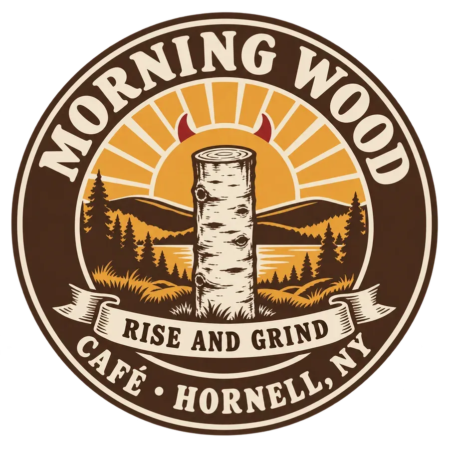
Morning Wood Café
Main Street · and a kiosk in the Union
An independent coffee house in reclaimed barn wood, with an outlet at every table and oat milk in everything.
Rise and grind. Luc, a retired drag performer, insists the name is about the barn wood and has said so with a straight face for nine years. The sign disappears every Hump Day.
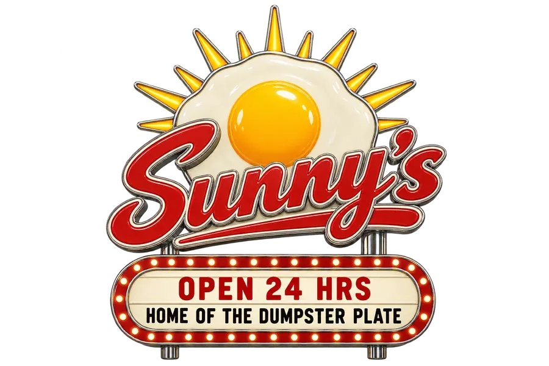
Sunny's Diner
South end · open 24 hours
A classic upstate diner with red vinyl booths, bottomless coffee and the regional Dumpster Plate.
Every after-party, all-nighter and breakup ends here at 4 a.m. Sunny feeds broke students on credit she never collects and throws out anyone rude to her waitresses.
Gino's Slice
Downtown · until 3 a.m.
Pizza by the slice on Main Street, a local favorite since the 1970s.
Line out the door at 2 a.m., Big Lou yelling orders, and a lifetime ban for anyone who throws up in his line. El Güero's taco truck parks behind the Rut, Thursday to Saturday.

Nightlife
Arts & entertainment downtown
Where to go tonight
Live music, a historic firehouse venue and a Main Street that has been serving Hornell since the railroad.
Freshman guys don't get into frat parties without girls. Bring your own drink. Don't go down to a frat basement alone. Call a Nxway.

The Rut
Broadway · Thursdays and Saturdays
Downtown's largest dance venue, with two floors and College Night on Thursdays.
Pink neon, two rams butting heads. $3 wells on College Night, Jess Kowalczyk on the decks, an X on the back of your hand if you're under 21, and the VIP rope for CHAD and the Top 10.
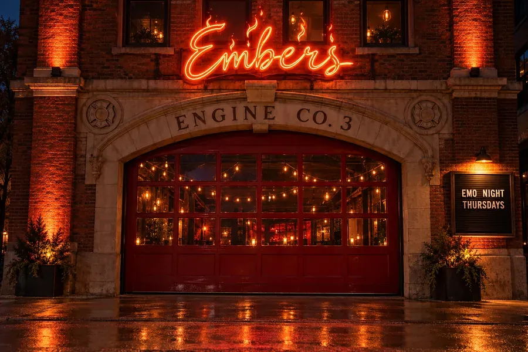
Embers
Broadway · a 1920s firehouse
A music venue in the restored Engine Co. 3 firehouse, with a basement stage for local bands.
Emo Night on Thursdays with DJ Dizzy closing the last hour, Y2K Night on Fridays. The safest dance floor in town: creep, grab or throw a slur and you're out mid-song.

The Randy Ram
Main Street · since 1946
A historic Main Street tavern with seventy years of Hornell hockey photographs on the walls.
Dee cards everyone every time, including people she's known for four years. Fakes don't work. Nobody knows how she knows.
O'Shea's, Sing Sing & the Yardmaster
Downtown and the rail yards
An Irish pub, a karaoke house with private rooms and a working-class bar by the rail yards.
Pretend you didn't see your professor at O'Shea's. Someone always sings to an ex at Sing Sing. The Yardmaster's sign says NO HORNELL U GEAR, and it means it.
Zeno's Temple
Seneca Street · basement gym
An independent boxing and MMA gym serving the Hornell community.
NO BULLIES, painted over the stairs. Open Challenge on the last Friday of the month: $5 at the door, a homemade title belt and a champion who has never been pinned.
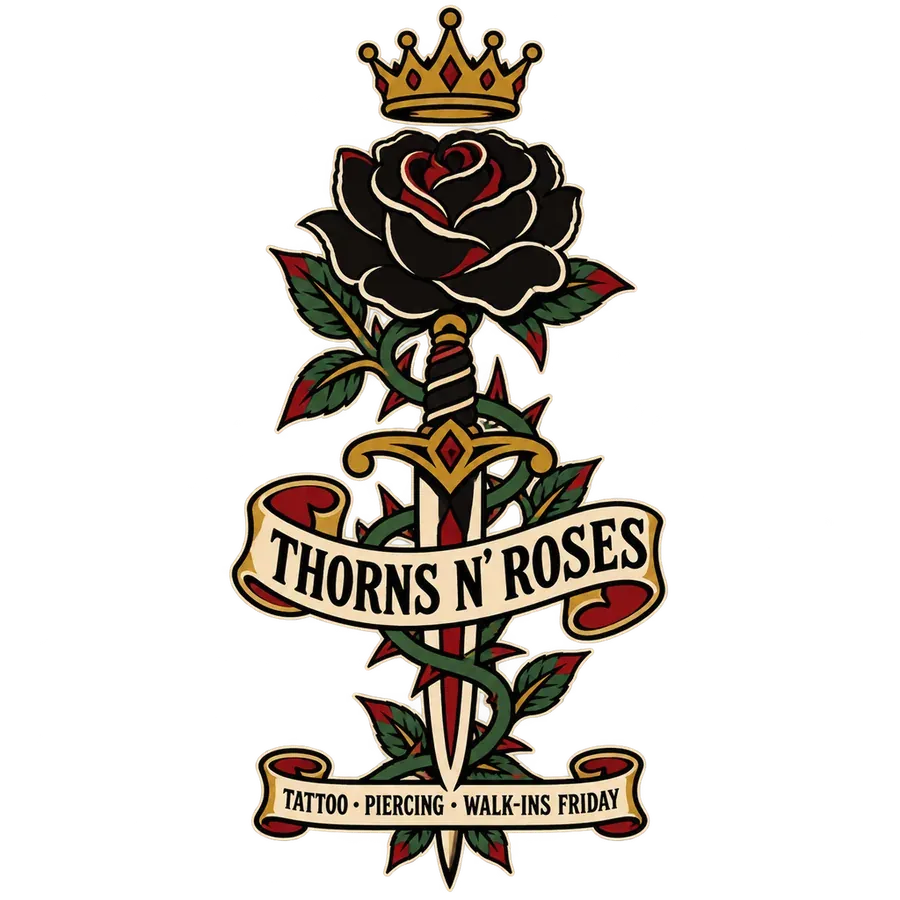
Thorns n' Roses
Main Street · tattoo and piercing
A tattoo and piercing studio with walk-in hours on Friday evenings.
Run by a woman everyone calls the Queen. A lot of matching tattoos. A lot of regrettable Ramsey tattoos.
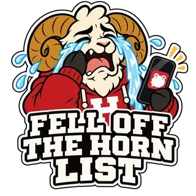
Campus media
Student voices
Who's talking about you
Hornell's independent student press, radio and digital media.
One post can make someone famous by lunch and ruin them by dinner.
Bleat
Anonymous · Hornell emails only
A student-built campus app for buying, selling and finding lost items.
The Horn List every Sunday at midnight, Missed Connections, Spill and a marketplace that sells everything from meal swipes to fake IDs. Names are supposed to be blurred. They aren't.
@hornyu.unfiltered
Instagram and TikTok · 38,000 followers
An unaffiliated account. The university has asked it to change its name.
Who left with whom, who got thrown out of where, which athlete cried after the game. Two cease-and-desist letters. Suspects: ANON, a GOTH, a Daily Ram editor, a TA.
The Daily Ram
Independent student newspaper
Published online daily with a Thursday print edition. Editor-in-chief: Talia Feldman.
Broke the CHAD hazing story and the Fuchs grade-fixing story. Has spent ten years trying to prove the Golden Fleece exists.
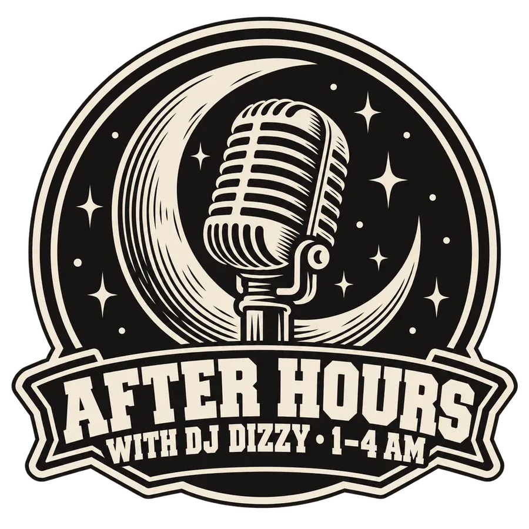
WHRN 88.7 “The Horn”
Student radio · Union basement
Student-run radio broadcasting from a glass booth in Moynihan Union.
After Hours with DJ Dizzy, 1 to 4 a.m., Thursday to Saturday: emo deep cuts, call-ins and anonymous dedications. She has never revealed who sent one.
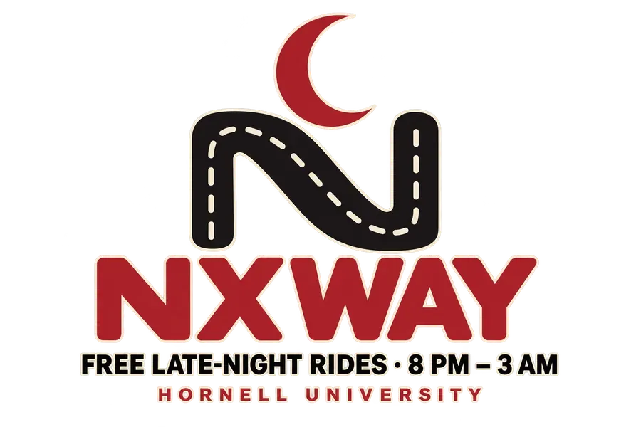
Nxway
Free rides · 8 p.m. to 3 a.m.
The university's free late-night ride service, operated by student drivers.
White vans, a 25-minute wait on weekends and drivers who have seen absolutely everything. The walk up East Hill drunk in January can kill you. Call a Nxway.
Bleat · the Horn List
Community guidelines for student apps
Every Sunday at midnight
Hornell University does not operate or endorse Bleat. Students who experience harassment on any platform can contact the Dean of Students.
Bleat publishes the Horn List: the 100 hottest people at Hornell, ranked by anonymous votes. Number one is the GOAT and gets a gold G for the week. The Top 10 skip the line at the Rut and walk into CHAD and BRAT parties. Under each List sits the Pasture, a thread roasting everyone who missed the cut. Campaigning is banned and constant. Being on the List and pretending not to care is the most Hornell thing a person can do.
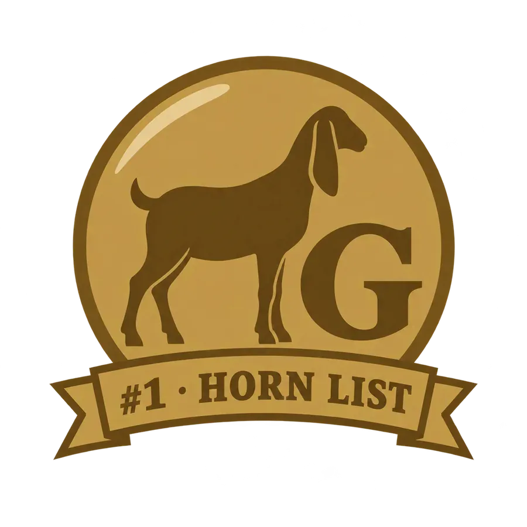
“The GOAT is just whoever Shika hasn't bitten yet.”Campus saying
Clubs & organizations
500 ways to get involved
Pick your people
Join at the Org Fair on the Quad in the second week of September. Club budgets come from the Student Government Association.
Club presidents court the SGA Senate like lobbyists. The Debate team will tell you they're ranked before you ask.
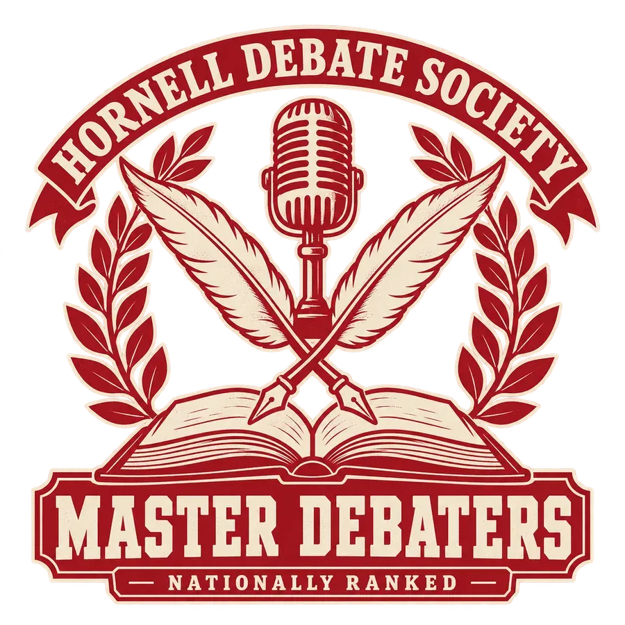
Debate Society
Nationally ranked, and insufferable about it.
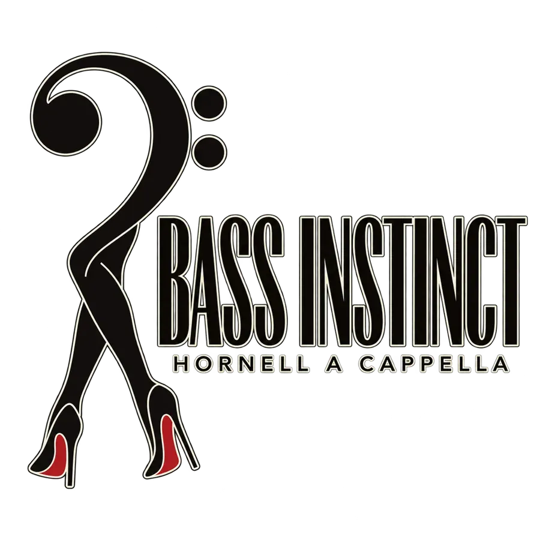
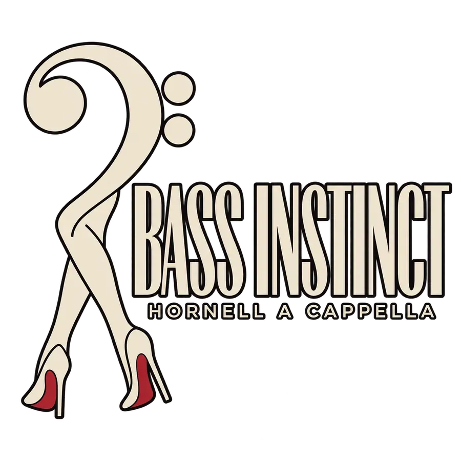
Bass Instinct
A cappella, at war with the Treble Makers.
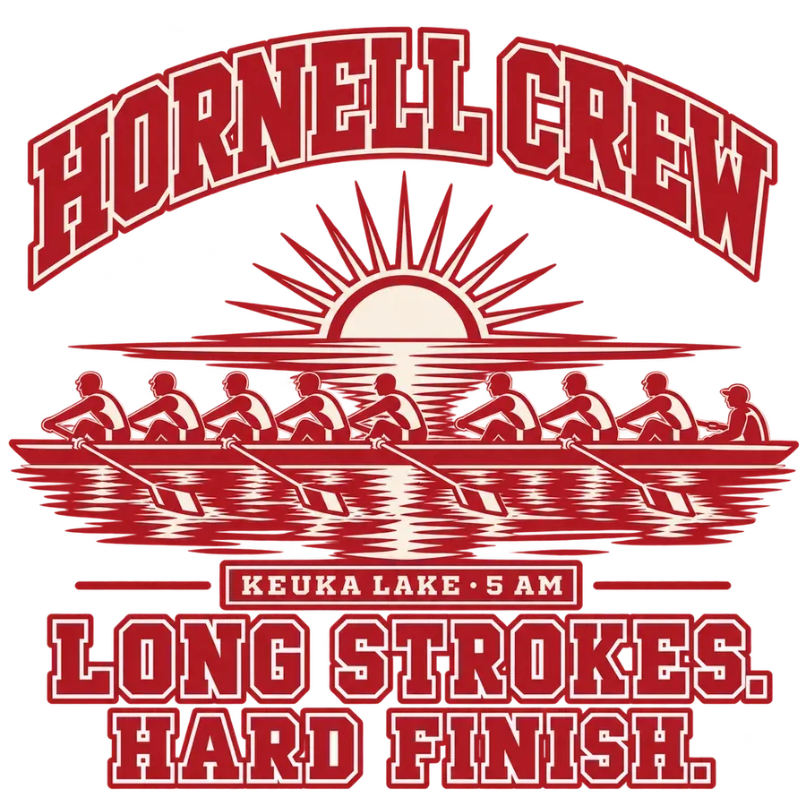
Hornell Crew
Up at 4:30, rowing Keuka Lake at sunrise.
Barbell Club
Lost the Empire Lift to St. Nora four years running.
Rams Wrestling
Varsity, and very proud of the logo.
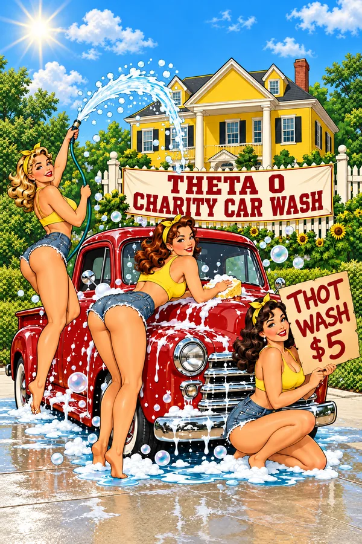
THOT charity car wash
Fundraising, in sports bras, every September.
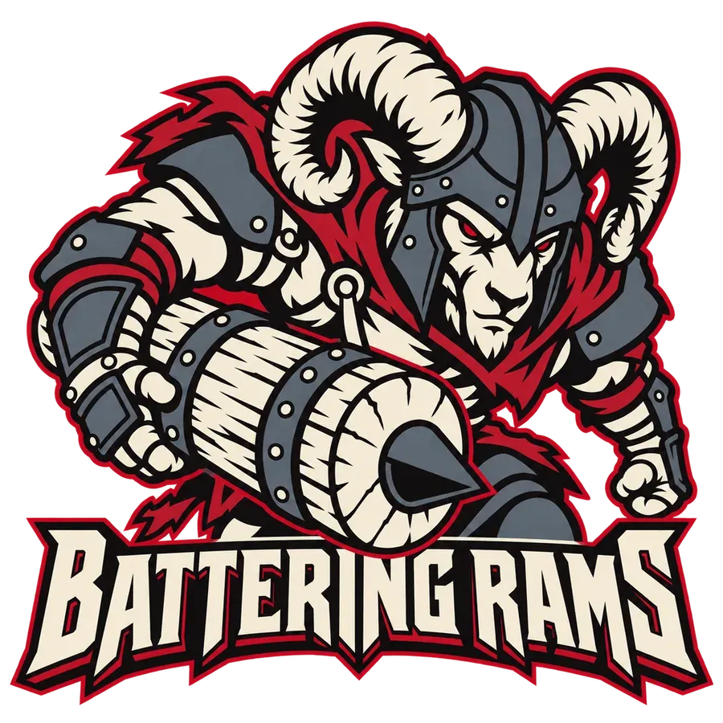
Battering Rams esports
Top-15 nationally. The players call themselves the Lynx.
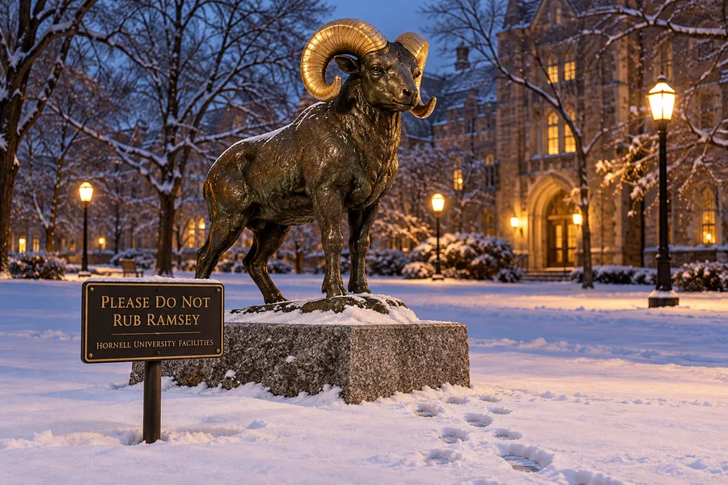
Chimes Club
Plays Wetmore Tower's bells. $5 per request.
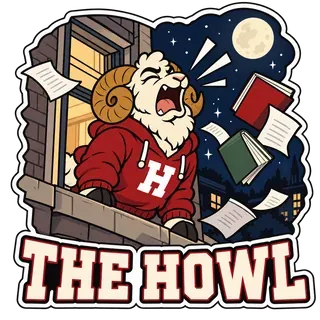
Calendar
The Hornell year
The year, honestly
From Move-in Day to Commencement, the traditions that shape a year on East Hill.
Rush, Hallura, Ramsey Watch, the Howl, the Plunge, Gorge Day, Hump Day. Classes happen in between.
August
- Move-in Day at the Long Johnsons
- Convocation in the Ram Pen
- First Night bonfire on the Quad
September
- Greek rush and Bid Day
- Org Fair on the Quad
- First home game · CHAD's White Party
- First Horn List of the year
October
- Homecoming and the Prince of Hornell
- Hallura and the haunted corn maze
- ZomVille Run 5K
- Foliage at Letchworth
November
- Horn Week and Ramsey Watch
- The Golden Horn vs Climax State
- Hockey opens at Kowalski Rink
- Orphans' Thanksgiving
December
- Dead Week · Cockburn goes 24/7
- The Howl, midnight before finals
- Carols on the Wetmore Chimes
January–February
- Black Tie Blackout
- Polar Plunge into the Punchbowl
- ANON's Masquerade
- Carnation-grams · the Empire Lift
March
- SGA elections
- St. Patrick's Day parade on Main
- Spring break
April
- Greek Week lip-sync in the Ram Pen
- Gorge Day, first day above 70°F
- Tapping night (rumored)
May
- Hump Day, the last day of classes
- Commencement at Schuyler Field
- Move-out dumpster shopping
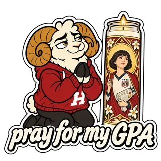
Legends
Traditions and lore
What everyone hears in the first month
Some Hornell traditions are older than the buildings they happen in.
None of these are true. Everyone does them anyway.
- Rub Ramsey's horns before a prelim. Never let your partner rub them for you, or you'll break up by finals.
- Kiss in the middle of the suspension bridge while the chimes play at six and you'll marry.
- Light a candle for St. Riba and your prelim gets curved. (Gruber has never curved.)
- The Stacks' lights go dark if you stand still, because something down there wants you gone.
- The Golden Fleece meets in the Cathedral under the Quad.
- The weeping angel in Maple Hill Cemetery turns her head if you visit her alone on Halloween night.
- Shika has bitten every future Rhodes Scholar.
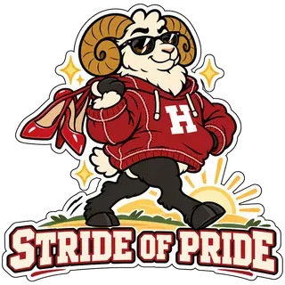
Not on the official map
Where Hornell goes to be alone
Every student learns this map within a month. Doyle Health Center keeps the condom bowl full.
The Stacks
Under Cockburn Library. The lights go dark if you hold still long enough.
The Catacombs
Forty soundproof practice rooms under the Wiener Center, lockable from inside.
Flat rocks below the Punchbowl
Summer nights only.
Mueller Observatory terrace
Before the 1 a.m. HUPD drive-by.
South Deck roof
In cars.
St. Ribamar's confessional
Still used, mostly not for confessions.
The Hornell Inn
For anyone who can pay for a door that locks.